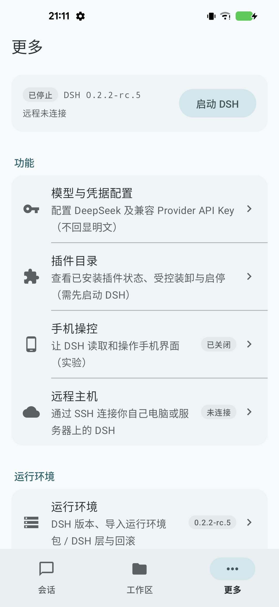
M3 概览卡（未运行 / DSH 版本 / 启动按钮）+ 功能分组卡 + 运行环境分组卡。
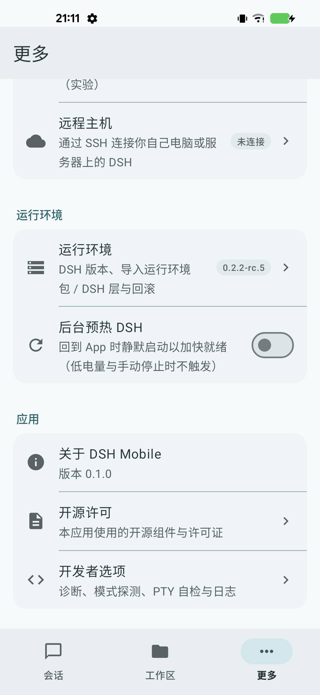
后台预热 MaterialSwitch、关于 / 开源许可 / 开发者选项卡片组。
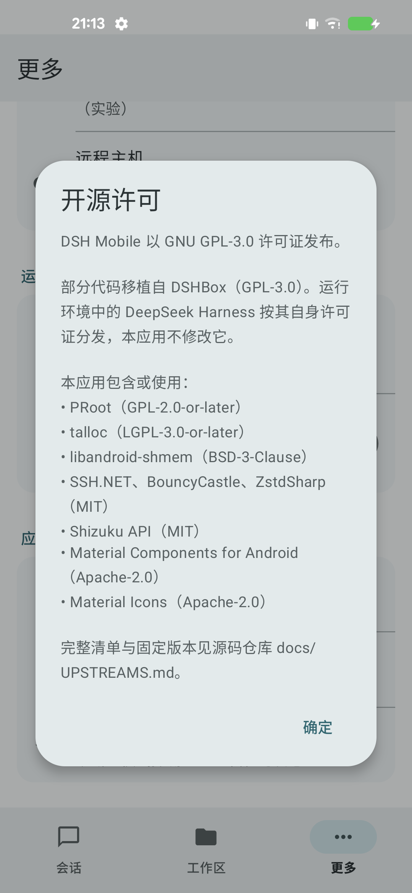
M3 对话框呈现 GPL-3.0 声明及 PRoot / talloc / SSH.NET 等上游许可证清单。
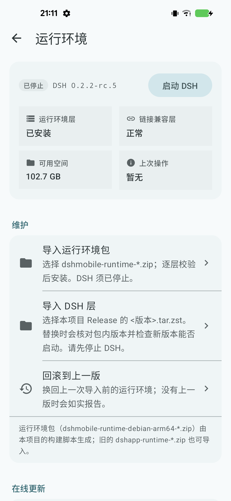
2×2 关键指标磁贴（运行环境层 / 链接兼容层 / 可用空间 102.7 GB / 上次操作）与离线维护组。
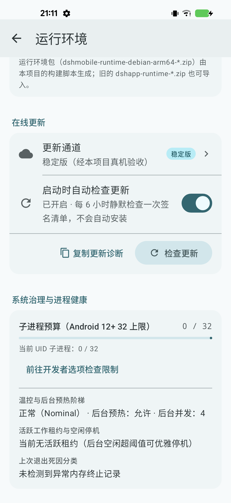
更新通道徽章、自动检查开关与 32 槽位进程配额进度条及温控/空闲租约指标。
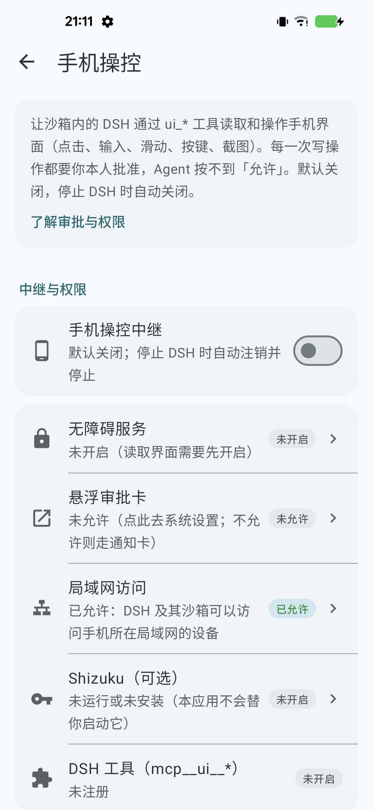
可折叠实验说明卡、Relay 总开关与权限状态分组顶部。
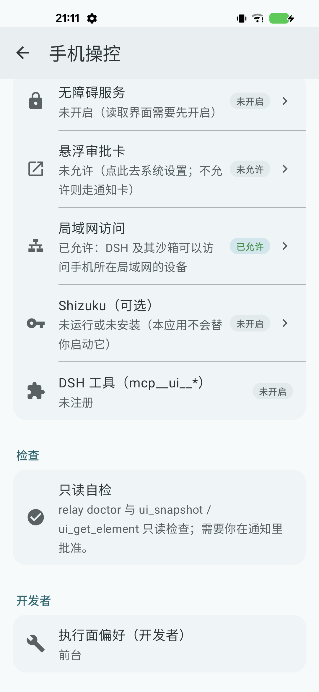
无障碍/悬浮窗（未开启/未允许）、局域网（已允许）、只读自检与执行面偏好入口。
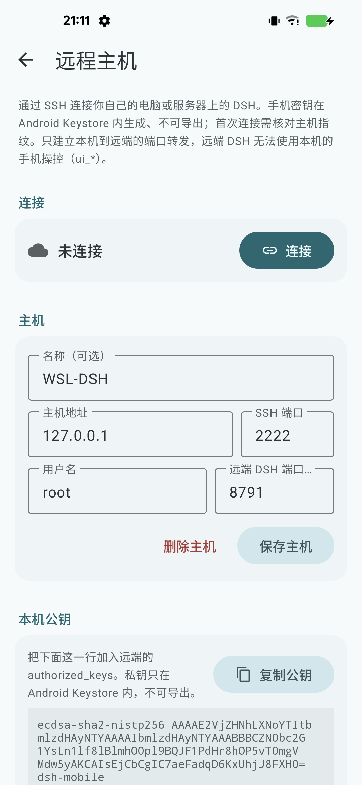
M3 TextInputLayout 表单（名称/地址/SSH 端口/用户名/远端端口）与 Keystore 等宽公钥卡。
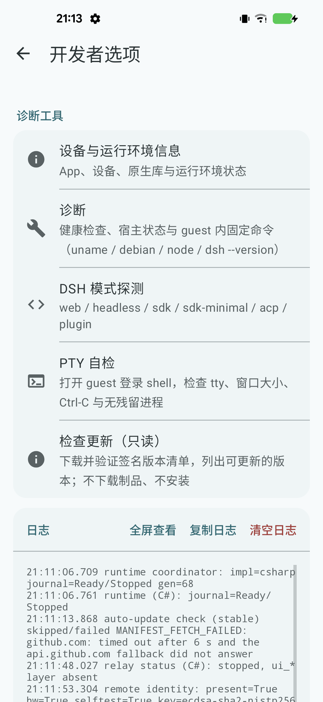
诊断工具列表卡片 + 内嵌等宽日志预览卡（全屏查看 / 复制 / 清空）。
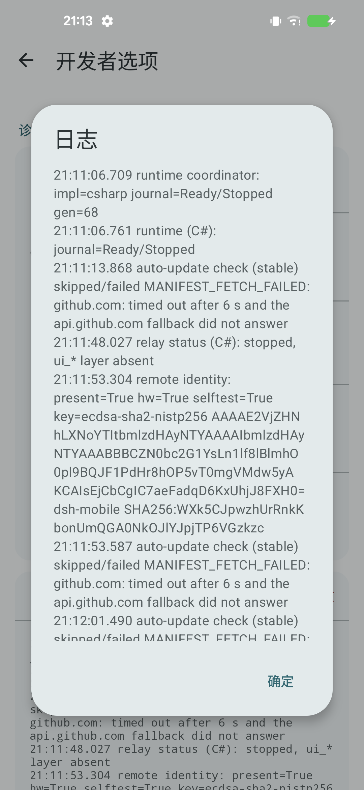
Rows.ShowScrollableTextDialog 展示完整诊断与 Keystore SHA256 日志。
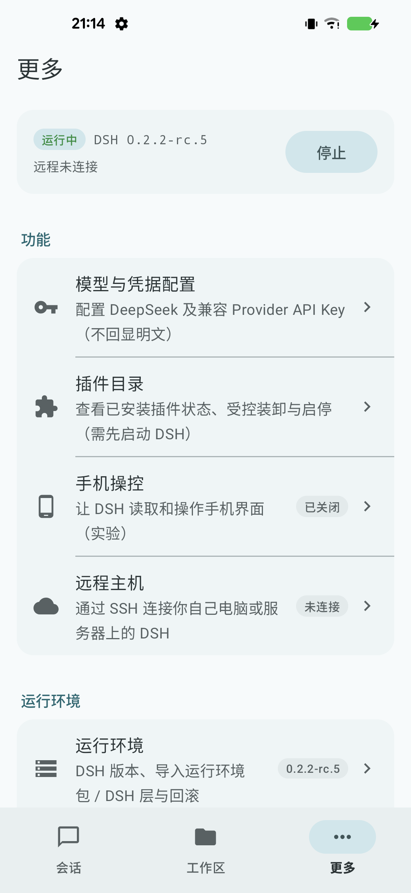
概览卡实时切换为绿色「运行中」徽章与「停止」按钮。
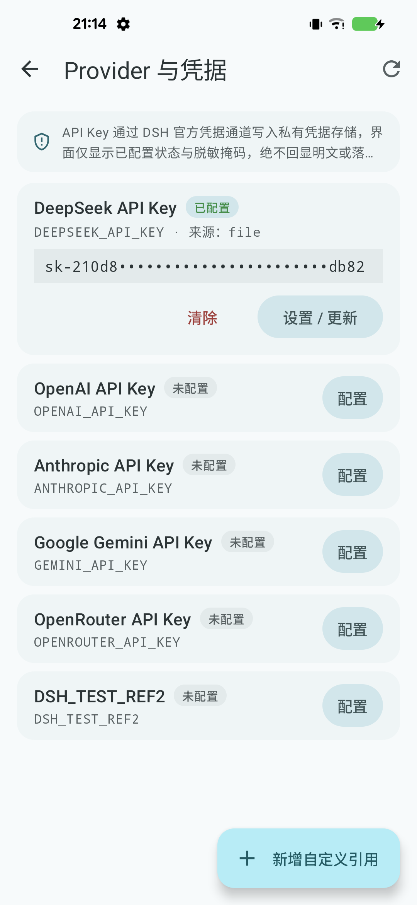
安全提示条、已配置 DEEPSEEK_API_KEY 脱敏掩码框（绝不回显明文）与未配置紧凑行 + 新增 FAB。
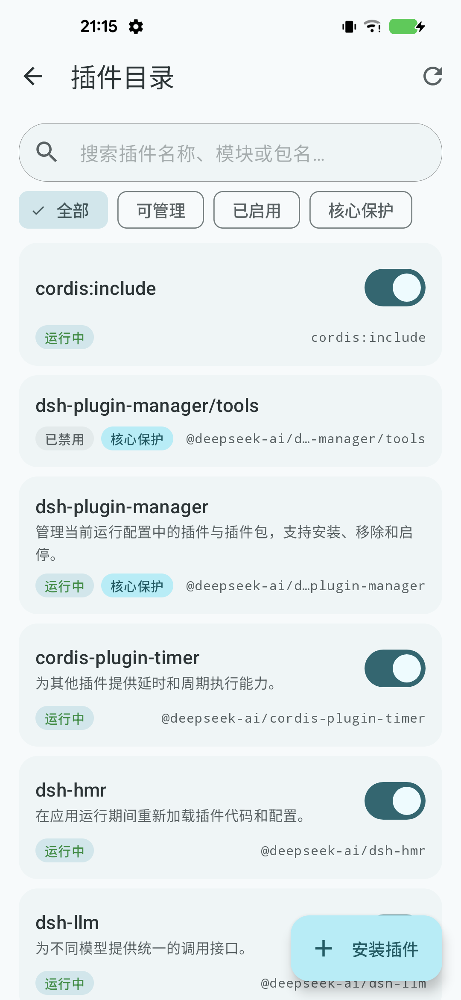
搜索框 + FilterChip 筛选 + 短模块标题与中文描述（核心保护卡不显示开关）+ 安装 FAB。
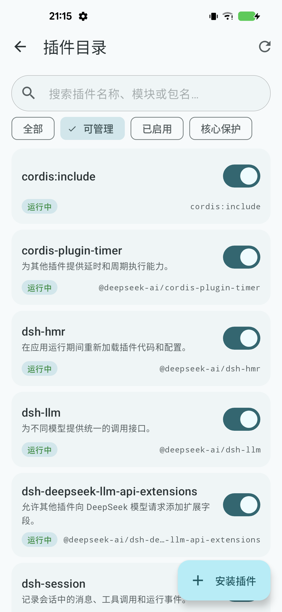
切换「可管理」FilterChip 后仅展示允许用户启停或卸载的插件。
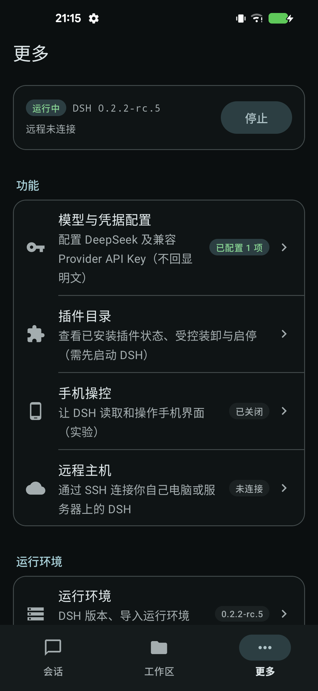
OLED 深色模式卡片描边清晰，且进入凭据页后主卡片已更新为「已配置 1 项」。
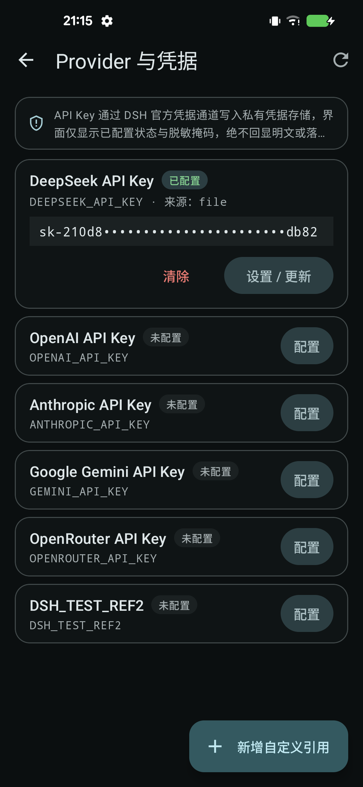
深色背景下脱敏框、清除红色警告字样与配置钮对比清晰。
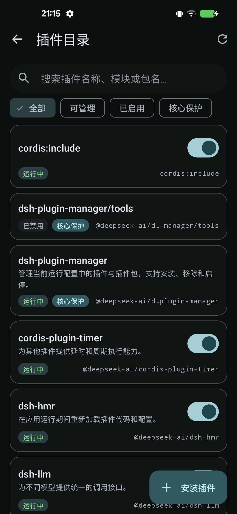
深色模式搜索栏、运行中/核心保护徽章与 MaterialSwitch 高对比可读。
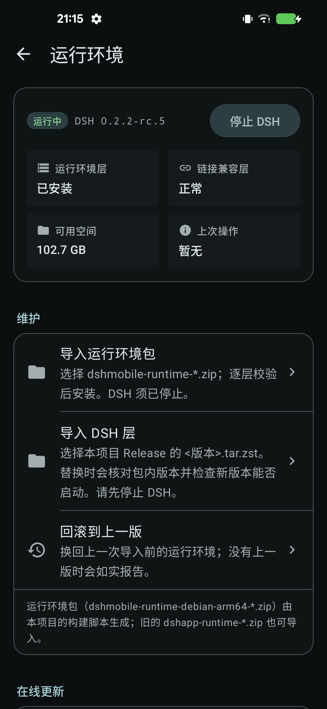
运行中状态卡、「停止 DSH」钮与 2×2 指标磁贴在深色模式下层次清楚。